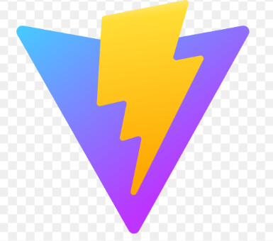
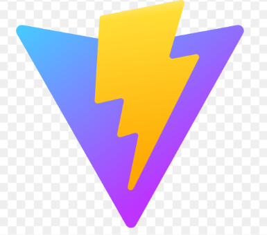

Audrey Minjoulet-Lafitte
Après avoir complété ma formation de développeuse web avec OpenClassrooms, je suis désormais en recherche active d'une alternance en tant que Product Owner.
Mon intérêt pour la gestion de projets et la création de produits m’a motivée à me tourner vers ce métier, où je souhaite allier mes compétences techniques et ma capacité à travailler en équipe.
Avec un parcours en tant que coach sportif, j’ai développé le sens de l’organisation, de l’écoute, et une forte capacité à accompagner les autres, des atouts que je souhaite désormais mettre à profit dans le domaine du digital. Curieuse et motivée, je suis prête à apprendre et à m’impliquer dans de nouveaux projets.
Mon CV


 
